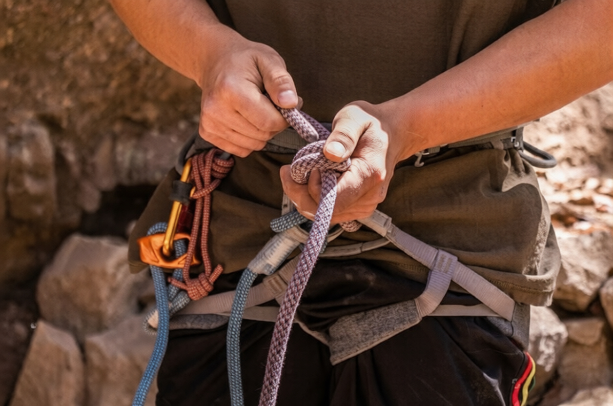
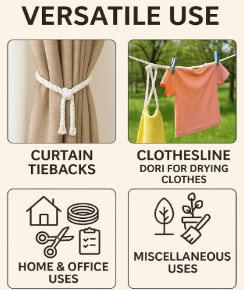
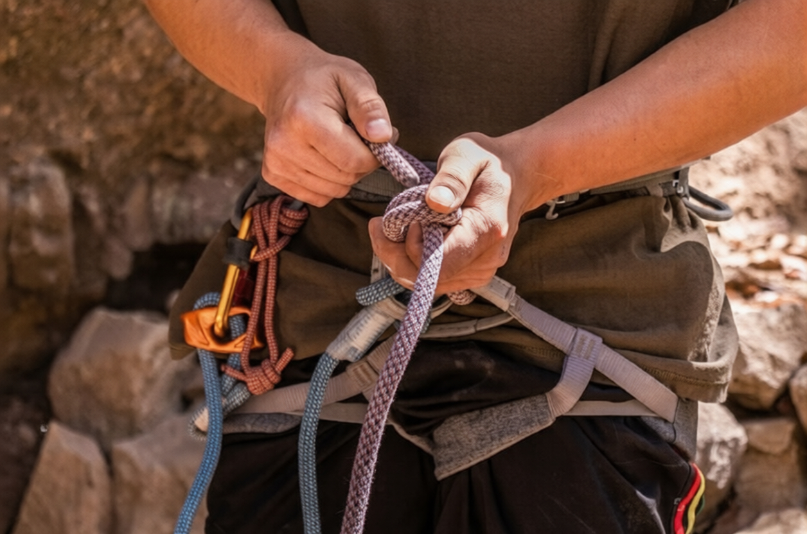
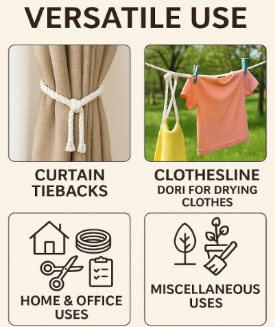

Product Overview
Nylon Ropes are known for their high strength, elasticity,
and durability, making them suitable for applications that
require reliable load handling and shock absorption.
These ropes are manufactured from premium nylon fibers,
offering excellent resistance to abrasion, moisture, and
environmental stress.
Key Features
- High tensile strength and durability
- Excellent flexibility and shock absorption
- Resistant to abrasion and wear
- Good resistance to moisture and weather
- Suitable for indoor and outdoor use
Specifications
- Material: Nylon (Polyamide)
- Construction: Twisted or braided
- Diameter: Various sizes available
- Colour: White / Natural
- Usage: Lifting, tying, and securing
Applications & Use Cases
- Marine and boating applications
- Industrial tying and load securing
- Construction and safety use
- General-purpose utility applications
- Outdoor and heavy-duty usage
Best Suited For
- Applications requiring shock absorption and elasticity
- Marine and transport operations with dynamic loads
- Repeated use where strength and flexibility are critical
Selection Note
For Indian operating conditions, nylon ropes are recommended
where sudden load variations or jerks are expected. Correct
diameter selection based on working load is essential for
safe and long-term usage.
Commonly Used Along With
- Hooks, Shackles, and Carabiners
- Tarpaulins and Covers
- Edge Protectors or Chafing Guards
Product FAQs
-
Why is nylon rope preferred for shock loads?
Nylon has natural elasticity, allowing it to absorb sudden
jerks and dynamic loads without snapping, making it ideal
for marine and transport applications.
-
Is nylon rope suitable for outdoor Indian conditions?
Yes. Nylon ropes perform well outdoors, but periodic inspection
is recommended due to UV exposure and moisture absorption.
-
How do I select the correct nylon rope diameter?
Diameter should be chosen based on the working load, safety
factor, and application type. Heavier loads require thicker ropes.
-
Does nylon rope absorb water?
Nylon absorbs some moisture, which can slightly reduce strength
when wet, but it regains strength once dried.
-
Can nylon rope be used for lifting?
Nylon rope can be used for tying and securing loads, but certified
lifting slings should be used for overhead lifting applications.
-
Are bulk and custom lengths available?
Yes. Nylon ropes are available in bulk quantities and custom
lengths for industrial and commercial buyers.
 


